HYD · 실습 가이드설비 지식의 구조와 연결 관계 탐색하기
관계 조회 실습에서는 Neo4j Browser에서 노드 스무 개짜리 예제 DB를 쿼리로 다뤘습니다. 이번에는 포털 지식 지도에서 노드를 하나씩 눌러 가며, 오늘 배운 클래스와 인스턴스, 식별자, 관계 유형으로 읽어 봅니다. 1회차에는 이 지도를 흐름으로만 봤고, 이번에는 읽는 법을 익힙니다. 온톨로지 → 에이전트 → 프로세스 가운데 온톨로지 단계입니다.
01 지식 지도 열고 설비 고르기
| 할 일 | 설비 한 대에서 시작해 이어진 노드를 차례로 누르며, 노드마다 클래스 · 식별자 · 속성 · 관계의 방향을 읽습니다. |
|---|
| 순서 | 지식 지도 열기 → 설비 → 오일 쿨러 → 유온 센서 → 증상 → 고장 유형 → 원인 → 부품 → 다른 설비의 지도에서 같은 쿨러 찾기 |
|---|
| 준비 | 1회차에 켰던 대로 포털을 켜고 홈을 엽니다. 보기만 하고 포털의 데이터는 바꾸지 않습니다. |
|---|
| 끝나면 | 처음 보는 노드도 클래스 → 식별자 → 속성 → 관계의 방향 차례로 읽고, 두 설비의 지도에서 본 오일 쿨러가 같은 노드인지 식별자로 가릴 수 있습니다. |
|---|
포털 왼쪽 메뉴에서 지식을 눌러 펼치고 지식 지도를 누르세요. 점과 선이 다 그려질 때까지 몇 초 기다립니다.
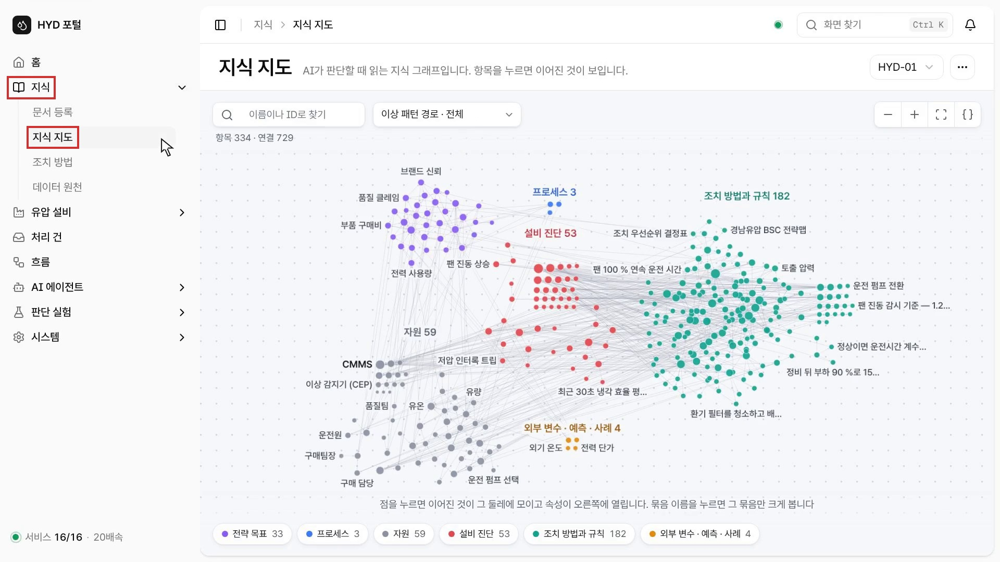
왼쪽 메뉴의 지식 · 지식 지도와 다 그려진 지도 · 누르면 크게 보기점 하나가 노드, 점 사이의 선이 관계입니다. 찾기 칸 아래 「항목 … · 연결 …」이 노드와 관계의 수인데, 수백 개라 설비 한 대에서 시작해 이어진 것만 따라갑니다.
찾을 글은 손으로 치지 말고 아래 상자의 복사를 눌러 붙여 넣으세요. 글자 하나만 틀려도 찾지 못합니다.
지도 바로 위 찾기 칸(칸 안에 「이름이나 ID로 찾기」)을 누르고 붙여 넣으세요. 맨 위 막대의 「화면 찾기」는 다른 칸입니다.
포털 지식 지도의 찾기 칸에 넣는 글
유압 파워팩
점 하나만 밝게 남으면 Enter를 누르세요.
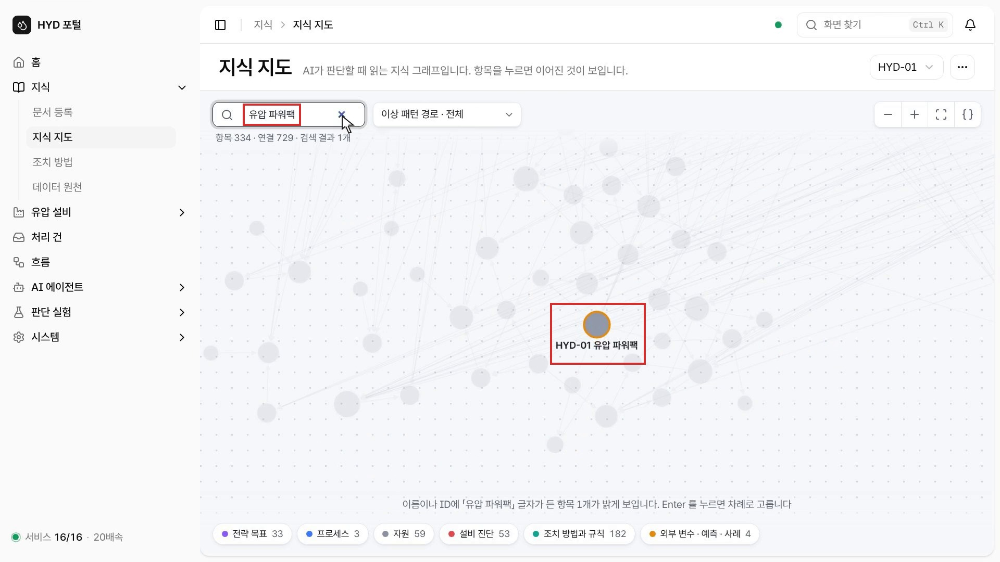
찾기 칸의 유압 파워팩과 밝게 남은 점 하나 · 누르면 크게 보기확인 HYD-01 유압 파워팩이 가운데로 오고, 오른쪽에 이 노드의 판이 열립니다(다음 단계 첫 사진).
02 설비 노드 읽기: 클래스 · 이름 · 식별자
오른쪽 판을 위에서부터 읽습니다.
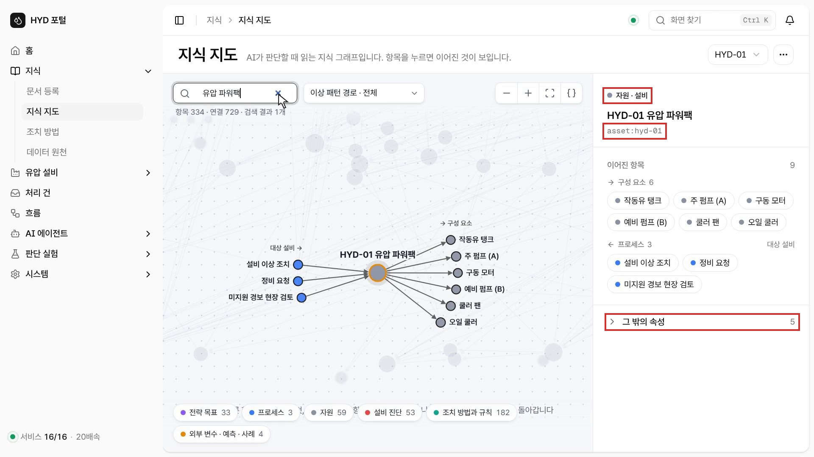
가운데로 온 HYD-01 유압 파워팩과 오른쪽 판의 자원 · 설비, 이름, 식별자, 그 밖의 속성 · 누르면 크게 보기- 맨 위 작은 글씨 「자원 · 설비」에서 뒤의 설비가 이 노드의 클래스입니다. 앞의 자원은 지도에서 이 클래스가 같은 색으로 모여 있던 곳의 이름입니다.
- 그 아래 큰 글씨가 이름입니다. 이 노드는 설비 클래스의 인스턴스 하나, 실제 설비 한 대입니다.
- 이름 밑 회색 글자
asset:hyd-01이 식별자입니다. 쌍점 앞 asset은 설비라는 뜻의 영어 낱말이고, 쌍점 뒤는 이름 앞의 설비 코드를 소문자로 적은 것입니다. 이름은 바뀔 수 있어도 식별자는 바뀌지 않습니다.
판 맨 아래 접힌 그 밖의 속성은 몰라도 됩니다.
확인 판에서 클래스 설비, 이름 HYD-01 유압 파워팩, 식별자 asset:hyd-01을 짚을 수 있습니다.
1회차에 쿨러에 고장을 낸 기록이 포털에 남아 있으면, 이 판과 뒤에 볼 쿨러 핀 오염 판에 「← 사건 1」 묶음이 하나 더 보입니다. 그 고장의 기록이니 따라가지 않아도 됩니다.
03 관계의 방향 읽고 오일 쿨러로 건너가기
판의 이어진 항목 아래에 관계가 방향별로 묶여 있습니다. →가 붙은 묶음은 이 노드에서 나가는 관계, ←가 붙은 묶음은 이 노드로 들어오는 관계입니다.
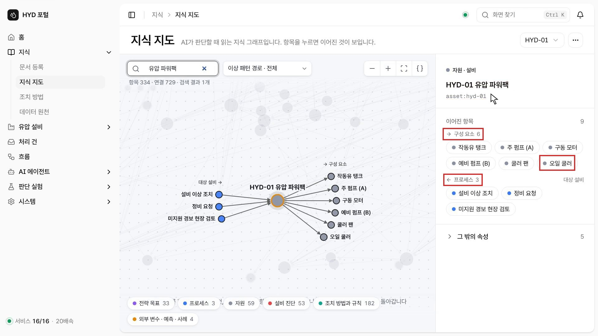
이어진 항목의 → 구성 요소 6과 ← 프로세스 3, 누를 오일 쿨러 · 누르면 크게 보기「→ 구성 요소 6」은 이론에서 가진다라고 부른 관계입니다. 이 화면은 관계 이름 대신 화살표 건너편에 있는 것을 묶음 이름으로 적습니다. 나가는 쪽이 주어라서 「이 설비는 구성 요소 여섯을 가진다」로 읽습니다. 「← 프로세스 3」은 이번에는 따라가지 않습니다.
여섯 가운데 오일 쿨러를 누르세요.
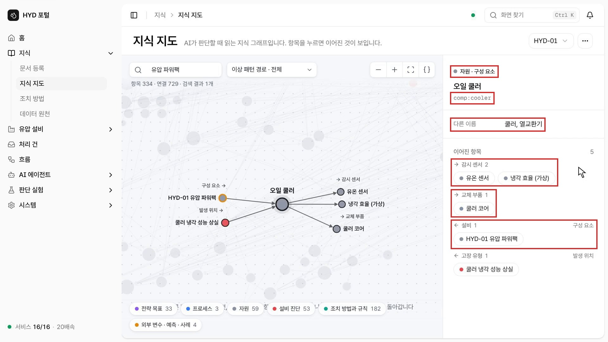
오일 쿨러 판의 자원 · 구성 요소, 식별자, 다른 이름, → 감시 센서 2, → 교체 부품 1, ← 설비 1 · 누르면 크게 보기- 클래스는 구성 요소입니다. 식별자
comp:cooler도 설비와 같은 꼴(쌍점 앞은 클래스, 뒤는 대상)입니다. 다른 이름의 열교환기는 현장에서 이 쿨러를 부르는 또 다른 이름입니다. - 나가는 「→ 감시 센서 2」는 감시된다, 「→ 교체 부품 1」은 쓴다 관계입니다. 이 쿨러는 센서 둘로 감시되고 부품 하나를 씁니다.
- 들어오는 「← 설비 1」은 설비 판에서 본 가진다 관계를 쿨러 쪽에서 본 것입니다. 들어오는 묶음은 건너편이 주어라서 「설비가 이 쿨러를 가진다」로 읽습니다.
확인 오일 쿨러 판에서 나가는 「→ 감시 센서 2」 · 「→ 교체 부품 1」과 들어오는 「← 설비 1」의 HYD-01 유압 파워팩을 짚을 수 있습니다.
04 센서의 속성과 관계 읽기
쿨러를 재는 센서의 단위는 쿨러 판에 없습니다. 단위는 센서의 속성값이라 센서 노드로 건너갑니다. 「→ 감시 센서 2」의 유온 센서를 누르세요.
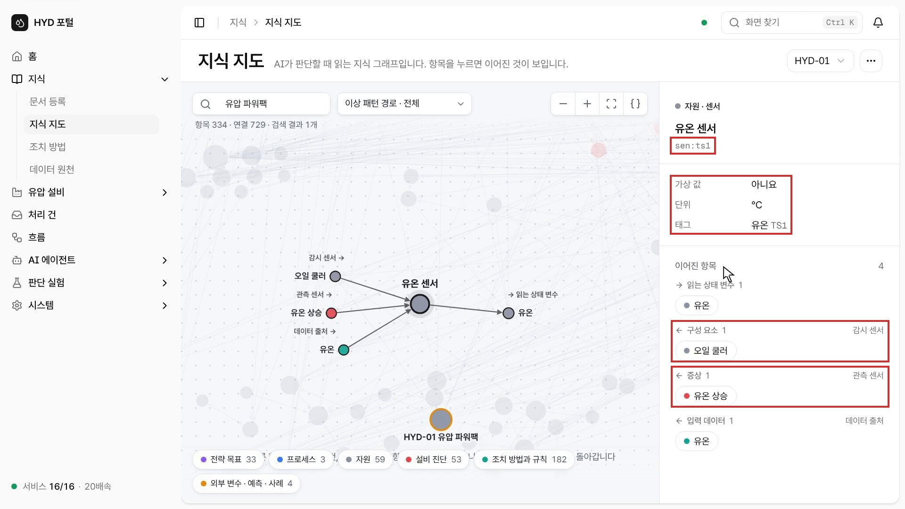
유온 센서 판의 속성 표, ← 구성 요소 1, ← 증상 1 · 누르면 크게 보기- 속성 표는 줄마다 왼쪽이 속성 이름, 오른쪽이 이 센서의 속성값입니다. 단위 ℃가 찾던 답입니다.
- 가상 값 아니요는 실제로 달린 센서라는 뜻입니다. 태그는 설비에서 올라오는 값을 찾을 때 쓰는 이름이라, 이름 밑 식별자(
sen:ts1)와 따로 적혀 있습니다. - 들어오는 「← 증상 1」은 건너편이 주어라서 「유온 상승은 이 센서로 관측된다」로 읽습니다.
- 바로 위 「← 구성 요소 1」은 쿨러에서 건너온 감시된다 관계입니다. 두 묶음 모두 이 센서에 닿지만 오른쪽 끝의 작은 글씨가 감시 센서와 관측 센서로 다르듯, 서로 다른 관계입니다.
맨 위 「→ 읽는 상태 변수 1」과 맨 아래 「← 입력 데이터 1」은 몰라도 됩니다.
확인 유온 센서 판에서 단위 ℃, 가상 값 아니요, 태그 줄과 「← 증상 1」의 유온 상승을 짚을 수 있습니다.
05 증상에서 부품까지 따라가기
여기부터는 1회차에 본 길입니다. 판마다 묶음이 여럿 나와도, 아래에 적은 묶음만 보고 누르면 됩니다.
「← 증상 1」의 유온 상승을 누르세요. 판 맨 위 작은 글씨가 「설비 진단 · 증상」으로 바뀝니다. 설비 영역에서 진단 영역으로 건너온 것입니다. 나가는 「→ 나타내는 고장 1」의 쿨러 냉각 성능 상실을 누르세요.
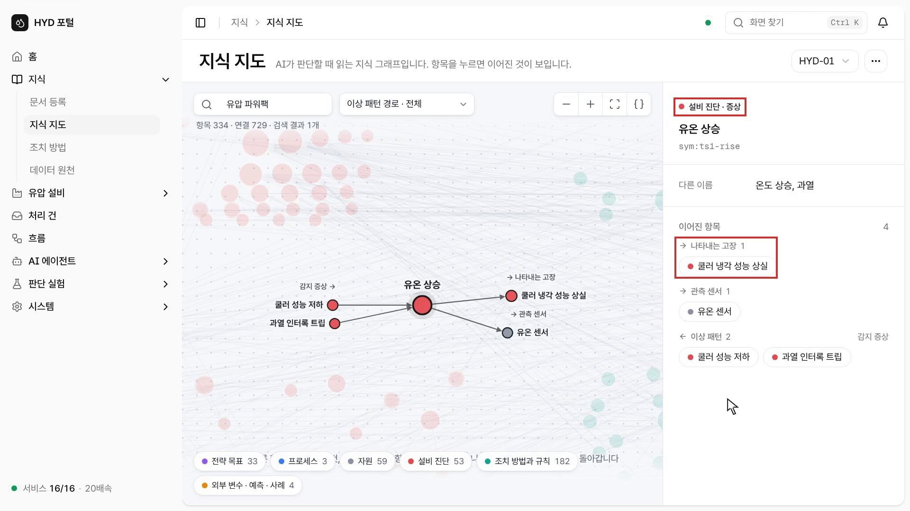
유온 상승 판의 설비 진단 · 증상과 → 나타내는 고장 1 · 누르면 크게 보기고장 유형 판입니다. 위쪽 「→ 근본 조치 4」 · 「→ 완화 조치 3」은 넘어갑니다. 「→ 발생 위치 1」은 이 고장이 오일 쿨러에서 일어난다는 관계입니다. 들어오는 「← 원인 3」은 원인이 이 고장을 일으킨다는 관계입니다. 그 가운데 1회차 쿨러 사건에서 AI가 고른 원인, 쿨러 핀 오염을 누르세요.
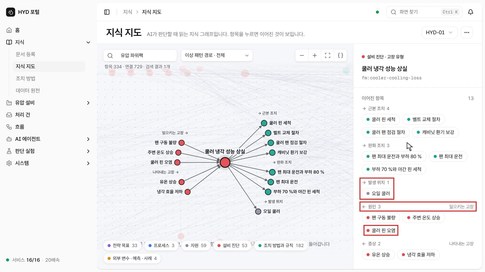
쿨러 냉각 성능 상실 판의 → 발생 위치 1과 ← 원인 3 · 누르면 크게 보기원인 판에서 나가는 「→ 관련 부품 1」의 쿨러 코어를 누르세요. 그 위의 다른 줄은 몰라도 됩니다.
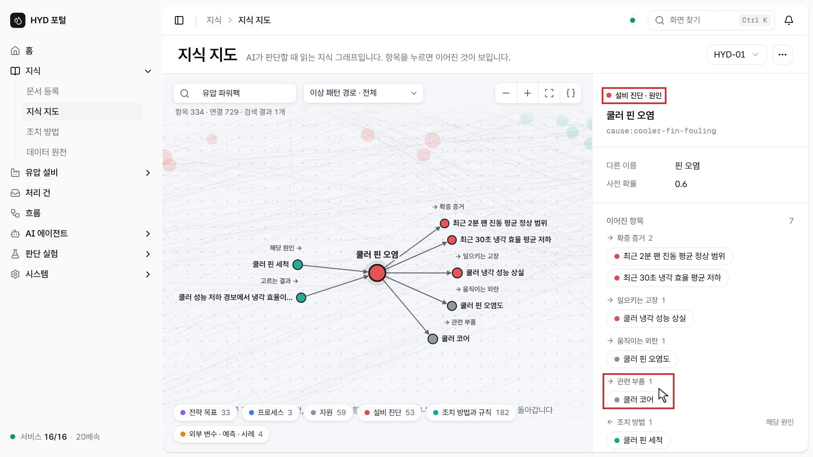
쿨러 핀 오염 판의 설비 진단 · 원인과 → 관련 부품 1 · 누르면 크게 보기부품 판입니다. 부품 번호 P-CLR-CORE가 이론에서 품번이라고 부른, 주문할 때 대는 번호입니다. 이 지도는 품번을 속성으로 두고, 식별자는 이름 밑에 따로 둡니다. 맨 아래 들어오는 「← 구성 요소 1」이 쿨러가 이 부품을 쓴다는 관계입니다. 그 오일 쿨러를 눌러 쿨러로 돌아가세요.
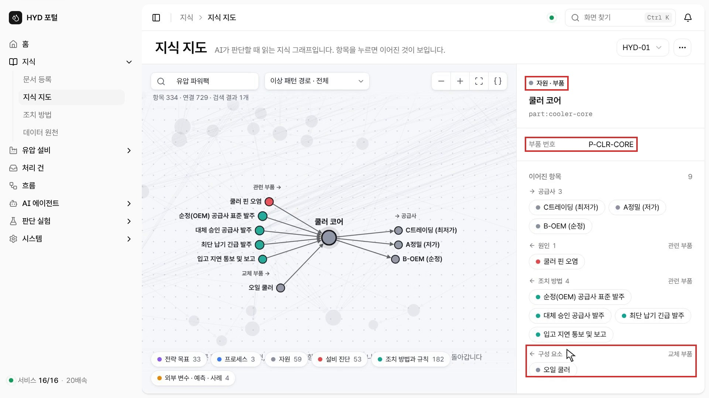
쿨러 코어 판의 자원 · 부품, 부품 번호, ← 구성 요소 1 · 누르면 크게 보기확인 유온 센서 → 유온 상승 → 쿨러 냉각 성능 상실 → 쿨러 핀 오염 → 쿨러 코어를 거쳐 다시 오일 쿨러의 판이 열립니다. 그동안 판 맨 위 작은 글씨는 자원 → 설비 진단 → 자원으로 바뀌었다 돌아왔습니다.
06 다른 설비의 지도에서 같은 쿨러 찾기
지도는 오른쪽 위 설비 고르기 칸에서 고른 설비 한 대만 그립니다. 지금은 HYD-01이고, 포털에는 같은 기종 설비가 세 대 있습니다. 둘째 설비 HYD-02의 지도에서 지금 쿨러의 식별자 comp:cooler로 찾아봅니다. 쿨러를 설비마다 따로 적었다면 식별자가 달라 나오지 않고, 하나로 적었다면 나옵니다.
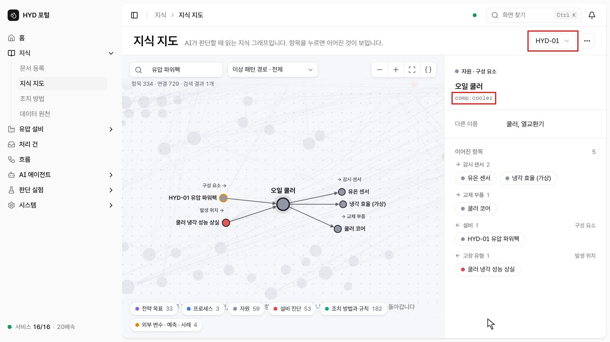
HYD-01 지도의 오일 쿨러 식별자와 설비 고르기 칸 HYD-01 · 누르면 크게 보기설비 고르기 칸에서 HYD-02를 고르세요. 지도를 다시 그리느라 몇 초 걸리고, 열려 있던 판은 닫힙니다.
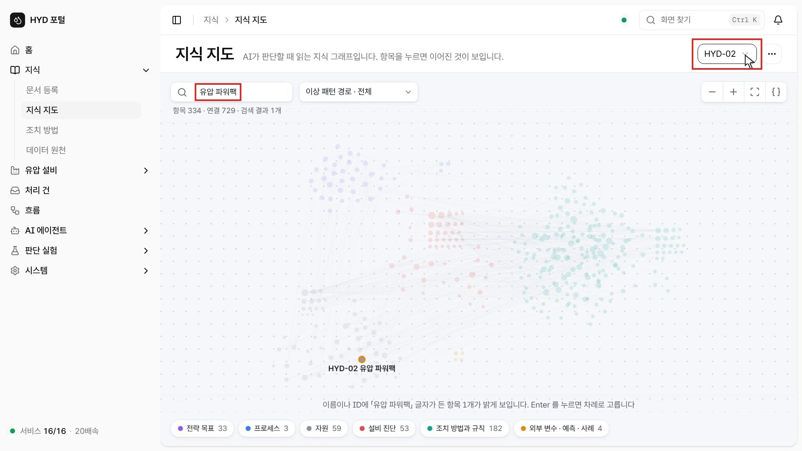
설비 고르기 칸의 HYD-02와 찾기 칸에 남은 유압 파워팩 · 누르면 크게 보기찾기 칸에 남은 글은 칸 오른쪽 끝의 ✕로 지우세요. ✕는 마우스를 칸에 올리면 보입니다. 찾기 칸은 이름뿐 아니라 ID, 곧 식별자로도 찾습니다. 아래 식별자를 붙여 넣으세요.
포털 지식 지도의 찾기 칸에 넣는 글
comp:cooler
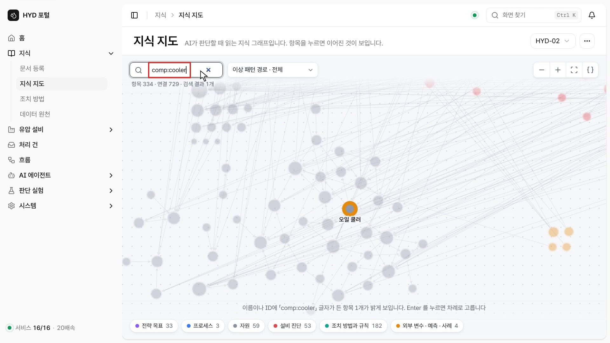
찾기 칸의 comp:cooler와 검색 결과 1개 · 누르면 크게 보기Enter를 누르세요.
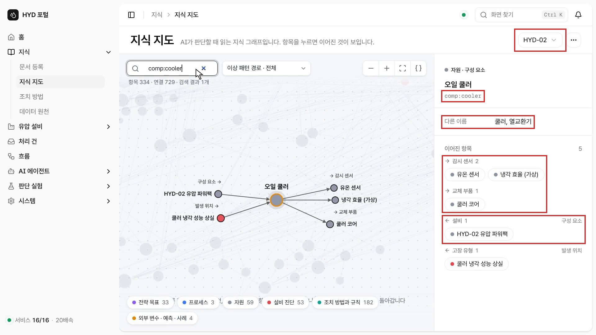
HYD-02 지도의 오일 쿨러 판: 식별자 · 다른 이름 · 센서 · 부품과 ← 설비 1의 HYD-02 유압 파워팩, 설비 고르기 칸 HYD-02 · 누르면 크게 보기확인 HYD-02의 지도에도 식별자가 같은 오일 쿨러가 있습니다. 다른 이름, 감시 센서 둘, 교체 부품 하나도 같고, 「← 설비 1」만 HYD-02 유압 파워팩으로 바뀌었습니다. 식별자가 같으니 두 지도의 오일 쿨러는 같은 노드입니다.